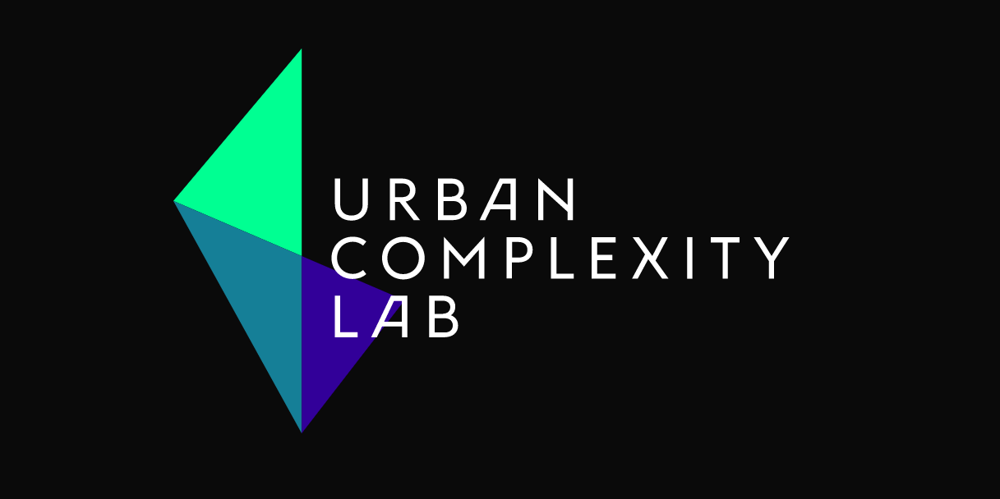
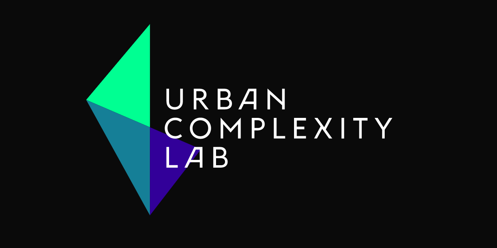

Hintergrund
Die Visualisierungen sind das Resultat einer explorativen Untersuchung, die zum Ziel hatte, innovative Perspektiven auf den Bestand der Deutschen Digitalen Bibliothek (DDB) zu entwickeln und in Form visueller und interaktiver Ansichten bereit zu stellen. Im Gegensatz zu existierenden Suchoberflächen, die wenige Objekte in Form von Ergebnislisten präsentieren, sollen die vorgestellten Ansichten die Streuung vieler Objekte entlang von Zeit, Ort, Thema, Person und anderen Dimensionen sichtbar machen.
FAQ
Wie hängen die Visualisierungen mit den Metadatenfeldern der DDB zusammen?
Die Visualisierungen basieren ausschließlich auf den Facetten (zum Beispiel Personen & Organisationen), welche die DDB in ihrem Suchinterface in der Seitenleiste bzw. in der API über indexing-profile bereitstellt.
Sind die Visualisierungen barrierefrei?
Nein, im Moment sind die Seiten bzw. Visualisierungen leider noch nicht auf Barrierefreiheit hin optimiert.
Warum stimmt manchmal nicht die Anzahl von Objekten in den Visualisierungen mit der entsprechenden Zahl auf der DDB-Seite überein?
Die Visualisierungen basieren auf einem Schnappschuss der Daten von Juni 2014 und bilden nicht den aktuellsten Datenbestand der DDB ab.
Welche Browser-Versionen werden unterstützt?
Die Visualisierungen wurden im Hinblick auf die aktuellen Versionen der vier meistverwendeten Browser entwickelt (Juni 2014): Chrome 35, Safari 7, Firefox 30, Internet Explorer 11. Die Visualisierungen sind nicht für mobile Geräte optimiert.


 
